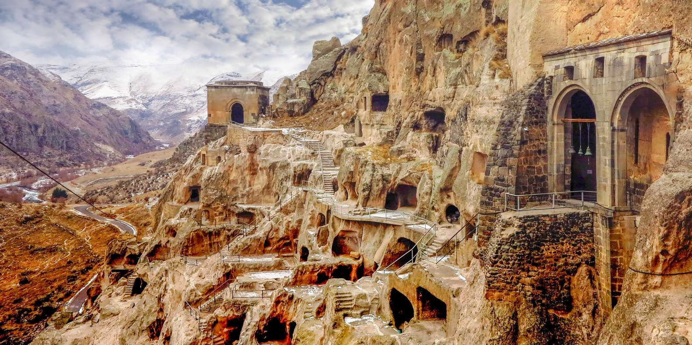
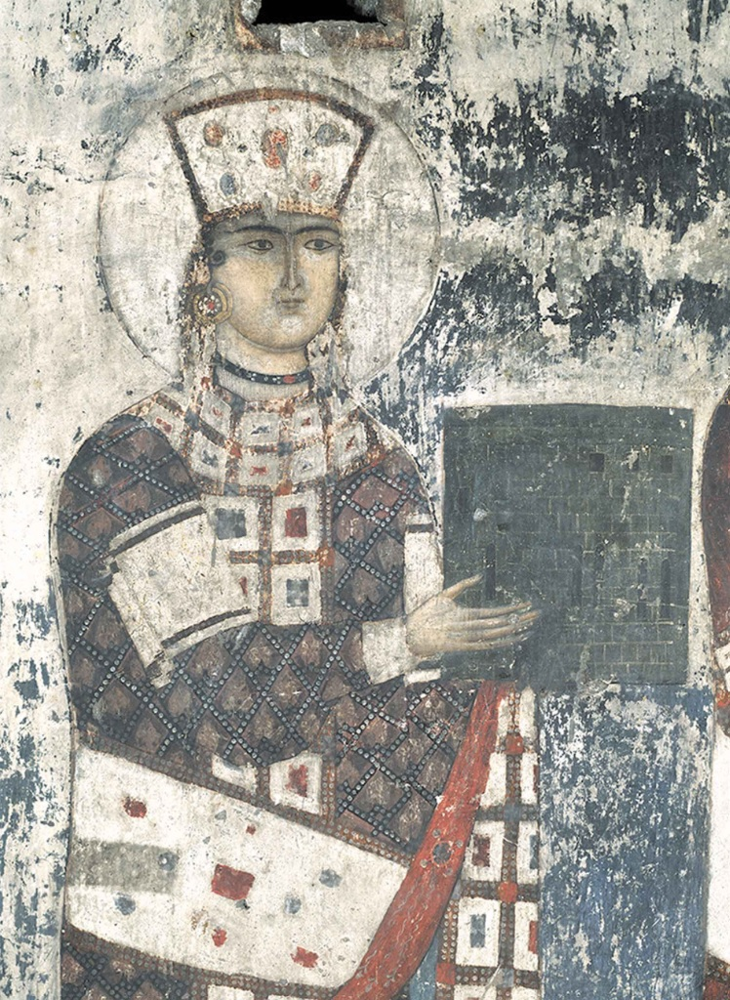
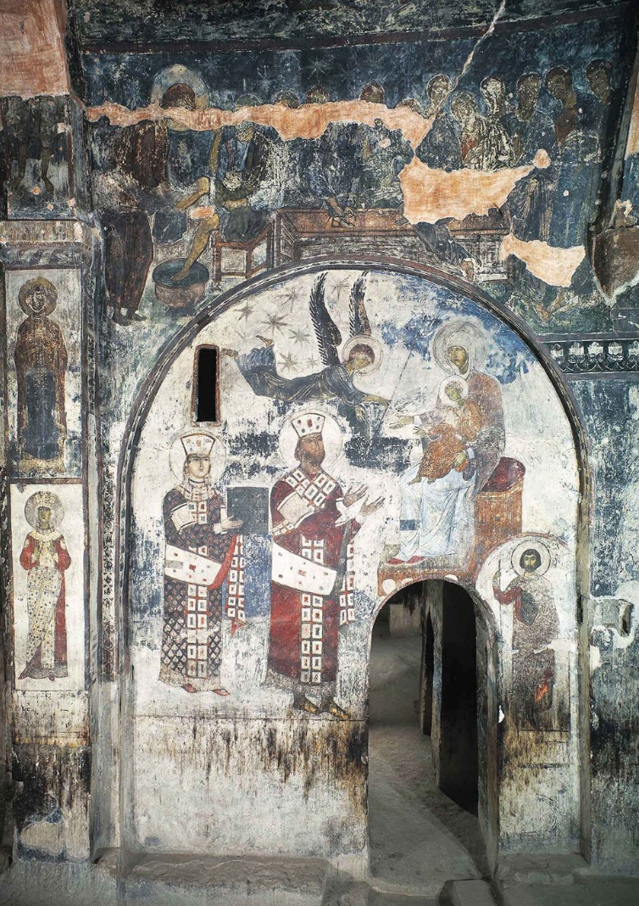
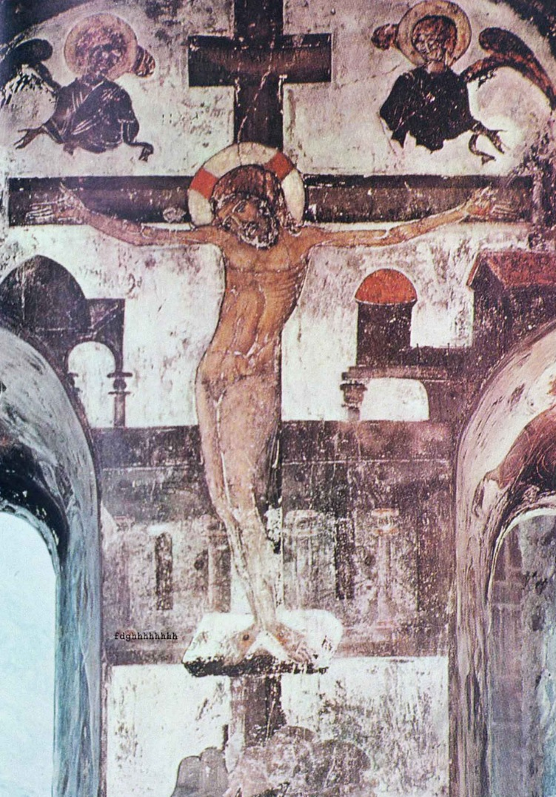

Kültürel Mirasımız

Vardzia
Vardzia, Gürcistan’ın güneyinde yer alan, kayalara oyulmuş eşsiz bir mağara şehir ve manastır kompleksidir. 12. yüzyılda Kraliçe Tamar döneminde inşa edilmiş olup, Gürcü Orta Çağ mimarisinin en etkileyici örneklerinden biridir. Kompleks, tüneller, odalar, salonlar ve fresklerle süslenmiş kiliselerden oluşur. Özellikle ana kilisedeki duvar resimleri, sanat ve tarih açısından büyük önem taşır. Vardzia, günümüzde Gürcistan’ın en değerli kültürel miras alanlarından biri olarak hem yerli hem de yabancı ziyaretçilerin ilgisini çekmektedir.
Daha fazla bilgi

Kraliçe Tamar'ın freski, 1186

Kral Giorgi III ve Kraliçe Tamar, tahtta oturan Bakire ile aracılık ederken, 1186

Çarmıha geriliş, 1186